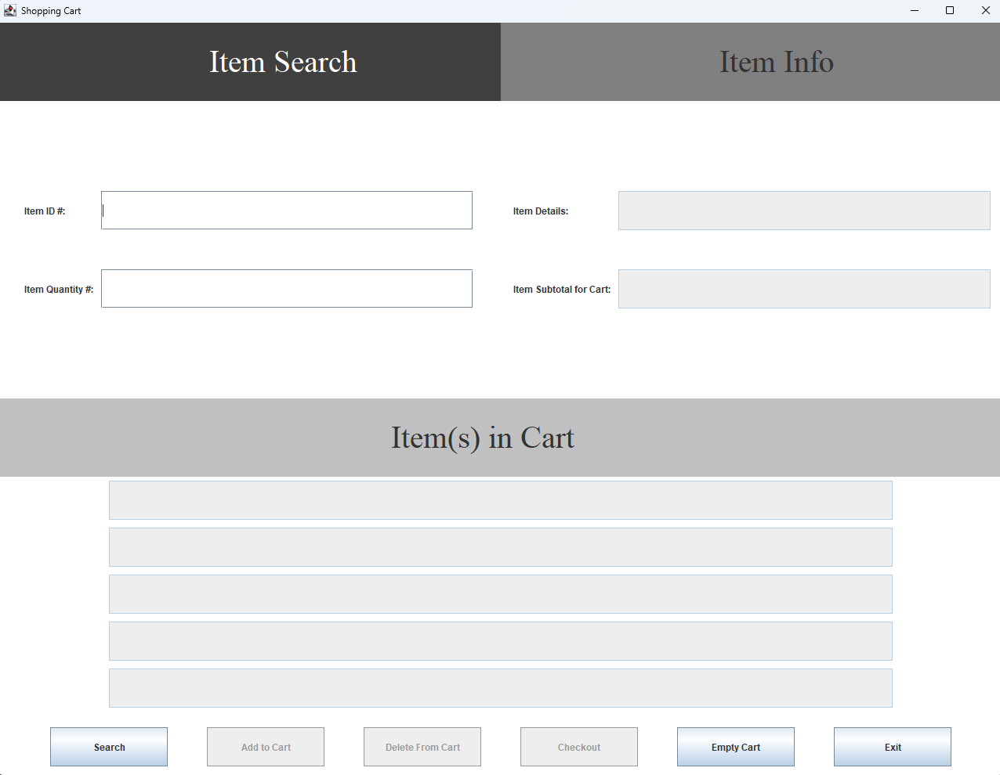

This project was a display in Java and graphical user interfaces. This GUI is designed to only allow the user to do certain actions at certain parts in the program.
For example, the user may not be able to checkout if there is nothing in the cart, or they may not be able to delete an item if there is nothing in the cart to delete.
It is also a display of using action listeners to handle user actions instead of a linear program that starts and ends at main.

A display of the initial GUI upon opening, before taking any actions.
I learned a lot from this project. Previously, I had only coded in a linear form using main as basically a list of actions, even if it might branch out to many functions.
This project taught me to use action listeners and handlers to handle, and to move away from basic coding strategies. Additionally, it refreshed and advanced my skills in Java and GUI's.
I am most comfortable coding in C, but this project helped me progress and get more comfortable using Java, and GUI's. Some parts of the project required me to think outside of the box
to achieve the formatting results that I did.